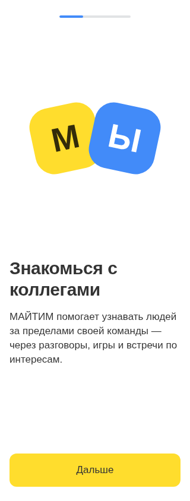
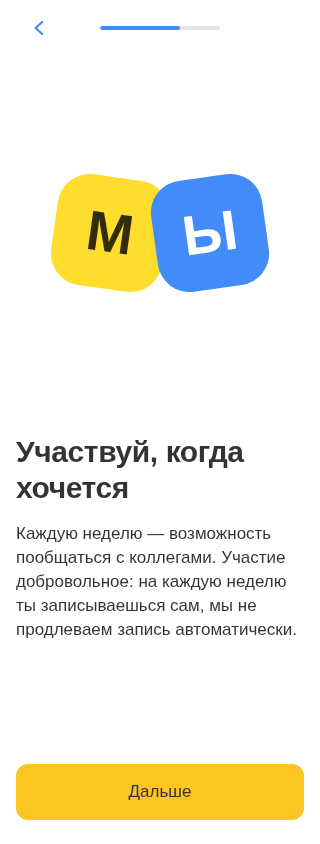
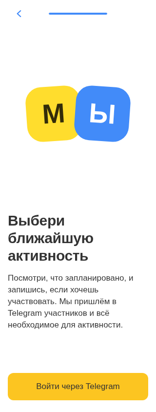
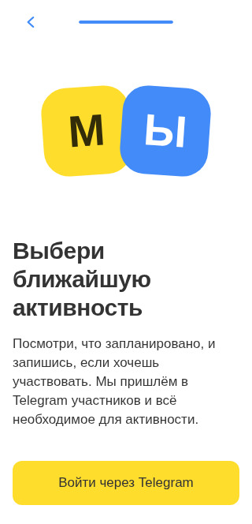

МАЙТИМ · онбординг по .fig
15 скриншотов по tui-onboarding-placeholders.fig. Шаблон Image Centered: иллюстрация, текст, нижняя кнопка; прогресс и возврат в AppBar. На коротком экране содержимое прокручивается без перекрытий.
Проверки изолированы от production и Telegram. Android/iOS — эмуляция Chromium, не реальные устройства/Safari. Выбранные мастера и веб-адаптация · Остальные экраны
Десктоп · 1440


Android · 393


iOS · 390


Узкий экран · 320







